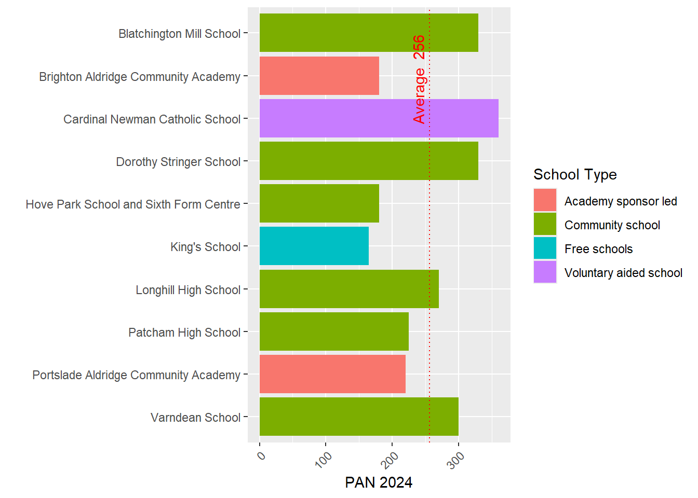
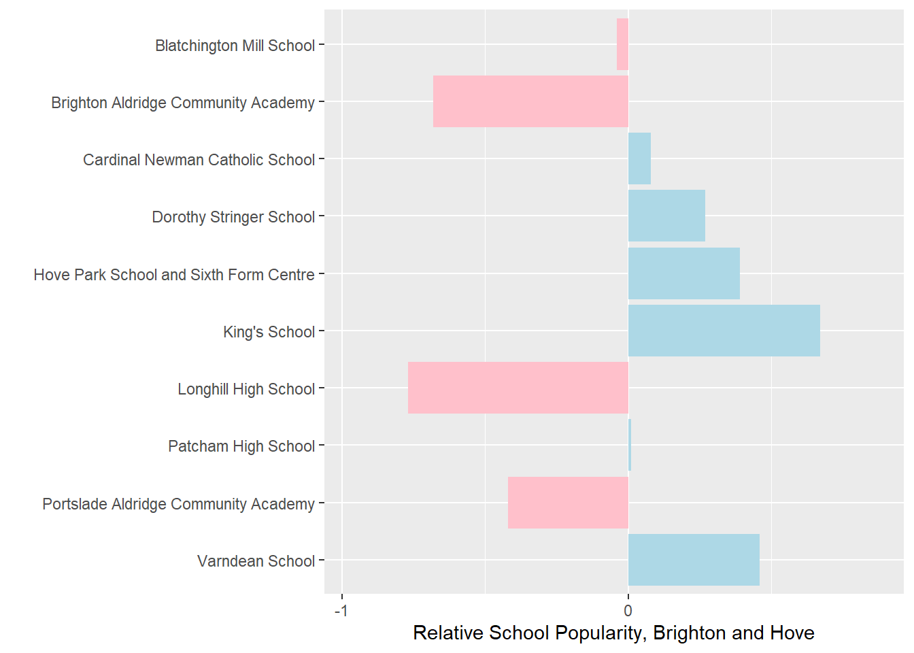
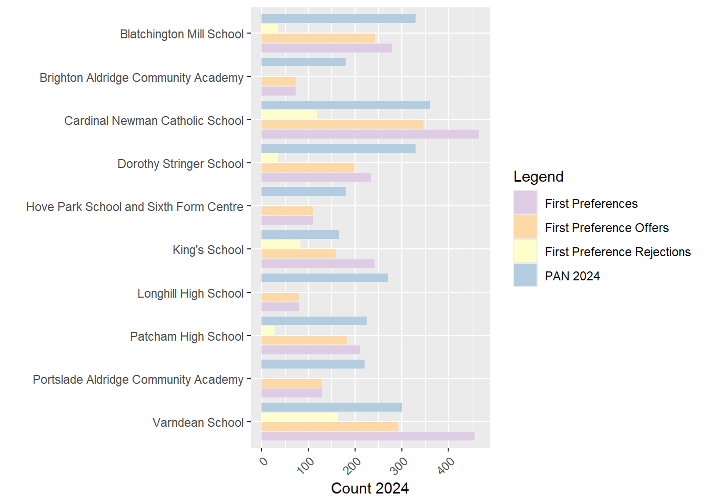

Brighton and Hove Secondary School Admissions Proposal - Week 2 Analysis
Terminology
PAN - Published Admission Number. This is the number of pupils a school is permitted to allow to enter a school in Year 7.
FSM - Free School Meals. This is the proportion of pupils in a school or residential area that receive free school meals because their household income is below a certain threshold. It is a widely used measure of social deprivation. In Brighton, the FSM threshold is currently household income below £16,190 - https://www.brighton-hove.gov.uk/schools-and-learning/free-school-meals
Headlines / Executive Summary
In this analysis I will present a viable alternative to the current proposals put forward by the council which allows the council to hit its current pupil number projections in 2026 across all schools in the city with no disruption to schools in the city or catchment boundaries.
It will allow space and time needed for the council to review its own initiatives on FSM mixing and improving educational outcomes.
I believe it is a proposal that can be backed by the population across all social and demographic groups in the city.
I believe it will allow the council the space and time it needs to engage with a proper, joined-up, systems thinking approach that pays due care and attention to all relevant dimensions of the issue.
It will allow the council time to engage with a full-range of experts on all aspects of this problem, as well as a greater breadth and depth of members of the community through community groups and forums that represent the diversity of views in the city.
I would encourage the council to consider carefully the detailed evidence I present below and the recommendations I make and I will of course be happy to speak to them at length about this.
PANs are one big driver of the issues. Despite what the Council says, from the analysis I have done, I believe there is no need to reduce PANs for most schools in the City in 2026 - reduction in PANS is necessary for some schools, but analysis below shows even for schools where they justifiably could be reduced, numbers still will be well in excess of their current admission figures and not smaller than the smallest school in the city.
Consequently, no change to current catchment boundaries is required in 2026 while still hitting Council PAN reduction targets, again, giving space and time priority.
The desired increase in social mixing that the council is currently trialling through allowing FSM pupils from other catchments priority over students within, will in all likelihood lead to some of the outcomes already desired by the council (Social Mixing and achievement improvements). It is a pioneering initiative with potentially very positive outcomes that needs space and time to be fully evaluated. Results will not published until early 2025 - after any changes the council might try and push through under the current time table. In the People Overview and Scrutiny Committee held on 9/10/2024, the Council’s own expert, Dr Ellen Greaves, University of Exeter, urged the council to wait for the results of this initiative before making any changes to the admissions system. Artificially reducing PANS in high demand schools will amplify problems as out of catchment students attend popular schools.
PANS for Academies, Free Schools and Religious schools cannot currently be set by the council. However, in the above meeting, Councillor Haver* raised a point that a Government White Paper is on the horizon which may give local authorities the power to control ALL PANs in the near future - this could alleviate some of the issues I am about to describe still further.
*I think this was her name - audio wasn’t perfect
The argument that Cllr Taylor and Richard Barker made in the face-to-face meeting was that they would not consider a PAN lower than 180 for Longhill as it would make it unviable. This is demonstrably untrue when comparing similar schools across the country - and even within the City itself! The King’s Free school has a PAN of 165 and in a short time has become one of the most successful and thriving schools in the City. Analysis of all similar schools in England and Wales shows out of 1163 similar schools, Longhill ranks 496, with 495 smaller open 11-16 secondary schools in existence today.
In the work below, I offer a viable alternative to the proposals presented by the council. An equity driven scenario I have called the ‘Kings PAN Scenario’ which has the outcomes:
no detrimental impact is felt across most schools in the city in 2026
a headline city-level PAN reduction is still achieved under the current council modelling scenarios
no school has PANs smaller than the smallest school already thriving in the city - and higher than or equal to their offers in 2024
options for the productive re-use of land (systems thinking) and should additional social and/or affordable housing be created on land released by reducing the estate, this could also contribute to the social mixing goals of the council in an otherwise relatively affluent area - a win win scenario.
Prelude - a review of where we are at after a busy week
After attending various in-person and online meetings, it has become clear that the Labour Council manifesto promise to ‘not close a school’ anywhere in the city, is a primary driving factor behind the proposals. As far as I am aware, there was nothing in the Labour Council manifesto that stated that it was their belief that the best way to achieve this was to artificially stuff low-demand schools on the geographic fringes of the city in areas of low child population, with children from more well-off parts of the city, against the wishes of them and their parents. This is the nub of the issue and why many people are very angry.
One of the schools at highest risk of closure - Longhill - is also, coincidentally, the school that Cllr Jacob Taylor (the Councillor leading the ) attended as a child, and a school that he had been a governor since 11 May 2021 until recently. He is no longer a governor there.
From what I have observed and listened to in these meetings, I am of the personal opinion that the educational mixing argument being promoted by the council as the main driver (alongside reducing roll numbers) for these proposals, while real, is actually secondary to the financial issues facing schools in the city. These are real and difficult to resolve and other solutions have been touted. It is my personal opinion that giving FSM pupils better access to better performing schools in the city, while a brilliant goal and something that should be addressed, is also convenient cover promoting solutions that would only address the underlying financial challenges in an indirect way - my reason for believing this is the council have not even given their own pioneering FSM policy time to bear fruit. This is important, as if the council admitted financial challenges were the driver, then different ‘solutions’ to the problem (such as the one I suggest below) become viable.
There is a real issue of socio-economic deprivation and segregation in the city with residents in the most deprived Eastern parts of the city lacking both quality in education provision and choice. This is a wider and long-term issue and has driven initiatives to tackle socio-economic disadvantage through the school system and admissions shake-ups in the past, many of which have failed due to a lack of systems thinking.
Compared to previous attempts to re-draw the catchments in Brighton, there is an additional challenge this time of reducing numbers of children in the city, reducing the money available from the government in a system which allocates money according to, primarily, pupil numbers and levels of deprivation associated with those pupils.
Brighton has what could be described as a ‘multiplier effect’ whereby the least popular provision is also geographically remote, but nearest to the most deprived children. A classic example of multiple deprivation.
The Council is faced with a big challenge, but rather than engaging in systems thinking and recognising that schools are a part of an interconnected urban ecosystem which encompasses the social fabric of the city with individual children, families and communities, transport systems, the environment, homes, jobs, and the economy, they are focusing only on the narrow educational dimensions of the problem, which while incredibly important, are no more or less important that the whole city system and cannot be managed in isolation from the rest of the city.
Having attended both the in-person consultation and the People Overview and Scrutiny Committee held on 9/10/2024, I still have the overwhelming impression that council is trying to rush through ill-conceived, poorly evidenced proposals that fail to look holistically at the problem. The level of objection from a huge number of families in the city is indicative of this failure.
A particularly big failure of process is that not only have the Council neglected the truly interconnected nature of schools and communities in the city, they have thus-far failed in their duty to carry out even the most basic evidence gathering and dissemination process before launching an engagement/consultation on the residents. Had they have completed this job in advance, they could have understood the problem better and come up with viable alternative, less disruptive, solutions - perhaps like the ones I propose below.
The Council have said that they will produce more evidence if this reaches the formal consultation stage, but it is my view that at this point it will be too late - to carry out the consultation properly, people need to be in possession of all of the facts. Evidence needs to come BEFORE policy. I am now even more of the strong opinion that the whole process needs to be paused to give time to build a comprehensive evidence base.
The council is giving the impression through its approach to this process that dogmatism and ideology are driving decisions more than full consideration of all relevant evidence - I sincerely hope my impressions in person are off the mark and I really do hope this is a mis-characterisation and I would love them to prove me wrong on this!
I have repeatedly asked the council to share their data with me and offered my services on multiple occasions to assist them in the evidence gathering I have expertise in. I have had some positive interations with Cllr Taylor and colleagues, but I am yet to receive any data. I have had correspondence that suggests it could be on the way, so I am keeping my fingers crossed.
Much of the data presented on this page are taken from a rare example of published and useful data here - https://www.brighton-hove.gov.uk/allocation-factsheet-year-7-places-september-2024
PANS for 2026 and 2030 are derived from tables in the power point from the consultation website - https://yourvoice.brighton-hove.gov.uk/en-GB/projects/secondary-school-engagement-exercise/1
The PAN Problem(s)
PAN Background
It has become clearer to me over the last week that one of the big issues in this whole consultation process is the PAN - both the total PAN in different years (which relates to population projections produced by the Council), and the individual school-level PANs (which affect how many pupils a school can admit at year 7). I will explore both of these dimensions, but first some local background:
A school cannot legally admit fewer children than its PAN where pupils wish to attend the school. The PAN is determined (initially) by the physical size of the school by the Government’s Net Capacity Assessment Programme, but it is not set in stone and can be reduced or increased according to demand. Physically larger schools may have artificially higher PANs even when lived pupil numbers are low.
In most secondary schools in Brighton (Stringer, Varndean, Hove Park, Blatchington, Patcham, Longhill) the PAN is set by the council.
Religious and Free Schools such as Cardinal Newman and King’s School are allowed to set their own PANs and the council can’t (presently) intervene.
Academies (Brighton Aldridge Community Academy - BACA, and Portslade Aldridge Community Academy - PACA) are also allowed to set their own PANs and the council can’t intervene.
One issue is that PANs for all schools contribute to the overall total number of ‘places’ in the City - but these don’t necessarily reflect pupils or their distribution (see my last paper if you want to know about geographic distribution). So if the Council is determined to reduce the number of places (PANs) in the city, if the Religious Schools and the Academies refuse to reduce their PANs and the council is wedded to reducing numbers, the only way it can do this is by cutting, proportionally, MORE places from Stringer, Varndean, Hove Park, Blatchington, Patcham, Longhill than it would have done if it could control PANs everywhere. At least, that is the way they are operating at the moment - as we will see below, there are other options.
In the People Overview and Scrutiny Committee held on 9/10/2024, Councillor Haver* (*again, I think that was her name, not 100% sure) raised a point that a Government White Paper is on the horizon which may give local authorities the power to control ALL PANs in the near future - this could alleviate some of the issues I am about to describe, but at the moment, nothing can be done by the council to affect PANS in some schools in the city.
PANS across Brighton
The graph below in Figure 1 shows the PANs for 2024 taken from here:
https://www.brighton-hove.gov.uk/allocation-factsheet-year-7-places-september-2024
Figure 1 - PANs by School and Type, Brighton
We can see from this graph that the academy schools and King’s School have a relatively low PAN compared to other schools in the City, with Cardinal Newman enjoying a PAN well above average at 360. This represents 14% of the total places available.
As an interesting aside, we know from the 2021 Census that 30.9% of the population of Brighton identify as Christian - https://www.ons.gov.uk/census/maps/choropleth/identity/religion/religion-tb/christian?lad=E06000043 - if we believe wikipedia - https://en.wikipedia.org/wiki/Religion_in_the_United_Kingdom - 13% of Christians in the UK are Catholic. So if we apply that percentage to Brighton, we can expect 3.9% of the population to be Roman Catholic. But 14% of the school places in the city can be reserved for Catholic Children as a priority. I’ll just leave that there to sink in!
PANs vs Applications and Intake
The graph below in Figure 2 includes exactly the same numbers as above, but this time contextualises them relative to the total number of applications each school had in 2024 and the number of places that were actually offered to students that year.

Figure 2 - PAN 2024 relative to counts of total applications and offers in the same year
A couple of things to point out:
Total Applications include all 1st, 2nd and 3rd choices for each school. It’s likely that schools in multi-school catchments may receive both first and second choices, potentially artificially inflating that number relative to the schools in single school catchments, so bear that in mind, however it can still be viewed as a crude measure of demand. I will disaggregate 1st, 2nd, and 3rd choices in some other graphs below.
All schools within multi-school catchments are very popular and are able to easily fill their offer numbers and probably could at least twice over - which is useful context when considering PAN reductions.
Some schools in Brighton received low numbers of applications. For BACA and Longhill, the numbers of applications they received were BELOW their PANs. These were not popular schools in 2024.
For BACA and Longhill, their total offer numbers were also below their PANs. This means the schools were very under-subscribed and had excess capacity. Longhill had a PAN of 270 and a total offer count of 94. Almost three times fewer students attending than there were places available.
Figure 3 - Relative School Popularity (School 2024 Application to 2024 PAN ratio divided by Average 2024 Brighton Application to PAN ratio)
Another way of looking at Applications vs PANs is take the ratio of applications into PAN and compare this with the city average. In the graph in Figure 3 above, the data has been rescaled (code in the github link) so that anything > 0 is greater popularity relative to other schools in the city, and anything < 0 is less popular.
Interestingly, we can see that Kings School - the smallest in the city in terms of places available with a PAN of 165, is relatively the most popular, Longhill, on the other hand, is relatively the least popular even after scaling according to the city average.
First Preferences, Offers and Rejections

Figure 4 - PAN 2024 relative to total First Preference Applications, Offers and Rejections.
Some things to note here in Figure 4:
First Preferences and rejections are an alternative demand measure for a school and less affected by double counting than total applications. More rejections occur where first preferences are high.
Three schools - Varndean, King’s and Cardinal Newman had more first-preference than PANs, indicating very high demand.
BACA, PACA and Longhill have significantly more PANs than first preference and thus larger proportions of their cohorts are filled with students who did not choose them as a first choice, indicating low demand.
Interpretation
- We can see from the evidence above that PANS for schools in the city bear little or no relation to the popularity of the schools in 2024, as evidenced through their application figures. In fact, for the most popular schools, their first-preference applications are far in excess of the places they have been allocated by the council - their PANS could easily be much higher, relative to other schools in the City.
- Some schools have PANs far in excess of their popularity which affects the rest of the system negatively. PANs matter when you have more demand than places as you can’t go any higher. When you have less demand than places in one school, the PAN is entirely irrelevant for the school (if you’ve only given out 94 offers, it doesn’t matter if your PAN is 270 or 2700!) but HUGELY relevant for the rest of the schools in the system as the number of pupils they can take in is reduced.
Proposed Changes to PANs

Figure 5 - 2024 PAN and Proposed 2026 and 2030 PANs under Option A of the Council’s reorganisation proposals.
*I should note that I have asked for the boundary data and numbers associated with the Option A boundary reorganisation, but at the time of writing have not received these. These new boundaries are slightly different and will have slightly different pupil numbers within catchments, but they are similar enough to the present catchment to hopefully still be able to make reasonable comparison. If more and better data arrive in the future, I will of course re-visit and update.
The graph above is a representation of the data provided in slide 11 of the materials supplied by the council. Under “Option A”, it’s clear to see that the council proposes to reduce PANS for all Council run schools in the city, first in 2026 and then again in 2030.
Below we see the same data, but this time in a table with the Council City-Wide PAN targets they have set at the bottom and three illustrative scenarios I have produced to explore the decisions the council is making and the biases in their PAN setting. The final column is a Scenario I am calling the “Kings 2026 PAN Scenario” which I will explain below.
Table 1 - 2024 PAN and Various PAN scenarios
| School | Type | PAN 2024 | PAN 2026 | PAN 2030 | PAN 2026 Scaled Popularity | PAN 2026 Scaled Even | PAN 2026 Kings Scenario |
|---|---|---|---|---|---|---|---|
| Blatchington Mill School | Community school | 330 | 300 | 240 | 289 | 315 | 330 |
| Brighton Aldridge Community Academy | Academy sponsor led | 180 | 180 | 180 | 57 | 172 | 165 |
| Cardinal Newman Catholic School | Voluntary aided school | 360 | 360 | 360 | 388 | 343 | 360 |
| Dorothy Stringer School | Community school | 330 | 300 | 270 | 380 | 315 | 330 |
| Hove Park School and Sixth Form Centre | Community school | 180 | 180 | 180 | 250 | 172 | 180 |
| King’s School | Free schools | 165 | 165 | 165 | 275 | 157 | 165 |
| Longhill High School | Community school | 270 | 240 | 180 | 55 | 257 | 165 |
| Patcham High School | Community school | 225 | 225 | 180 | 228 | 214 | 225 |
| Portslade Aldridge Community Academy | Academy sponsor led | 220 | 220 | 220 | 128 | 210 | 220 |
| Varndean School | Community school | 300 | 270 | 240 | 393 | 286 | 300 |
| Total | 2560 | 2440 | 2215 | 2443 | 2441 | 2440 |
Observations - Council Proposed PANs
- I have made a number of earlier observations which look at proposed PAN reductions for different schools in the city level relative to the population distribution of pupils and have shown that there are more severe reductions in areas of higher demand and less severe reductions in areas of lower demand, so I won’t go over that again here.
- What I will comment on, however, are the PAN levels relative to school popularity - a related by slightly different dimension.
PAN 2026 Scenario 1 - Scaled by Popularity
Firstly, I should point out that these scenarios below are illustrative - I know that school entry numbers are predicated on multiples of 30, but these are designed to show the effect of different policies and priorities on these numbers.
Taking relative popularity as shown in Figure 3 above, and using that to scale up and down the PAN according the level of popularity in 2024, we see:
The PANs for Dorothy Strings, Varndean, Hove Park, Kings, and Varndean in 2026 would all increase by quite large numbers of pupils, reflecting their popularity and accommodating demand.
The PANs for Blatchington Mill would reduce almost in line with proposals, Cardinal newman, already with a high PAN, would remain similar, and Patcham would remain virtually the same.
The PANs for BACA, PACA and Longhill would decline considerably and to the point where they would not be viable schools.
As stated at the top, this is merely illustrative and NOT in any form a recommendation, but it is useful to explore how the reality of school popularity would change the PANs across the city if it were used.
PAN 2026 Scenario 2 - Scaled by even reductions
What would happen if the council reduced PANs down for each school, but did so evenly across the whole city, according to their current distributions? i.e. dividing each school PAN 2004 by the total Brighton PAN in 2024 and simply multiplying that proportion by the 2026 Brighton Total PAN. Again, I know these don’t fit into multiples of 30, but help for illustration.
What this scenario is useful for is exploring is the impact of some schools being able to opt out of reducing thir PANs. If all things were equal, the 2026 Scaled Even PAN would be the same as the Council 2026 PAN.
As we can see, things are not equal. Part of this, of course, it due to the fact mentioned earlier that BACA, PACA, Cardinal Newman and Kings set their own PANs at the moment and the Council can’t change this.
However, we can start to see which schools are hit harder by the intractability of not being able to make the non-council run schools take their fair share of the hit.
Blatchington Mill’s PAN is 15 pupils lower than expected
Longhill is 17 students lower than expected
Dorothy Stringer 15 students lower
Varndean at 15/16 students lower.
The presence of schools in the system that can set their own PANs, unfairly disadvantages other schools who can’t in this scenario.
We can see that more-or-less what the council are proposing - factoring out the schools they can’t control - is something close to this equal reduction scenario, with Patcham perhaps being a little more equal than the others. However, equality is quite different from equity, which pays attention to different levels of need.
PAN 2026 Scenario 3 - the Kings Scenario
This scenario takes a little explaining which I will do below. One way of thinking about this scenario is it is the EQUITY scenario. It pays more attention to equality but also pays some attention to need as defined by demand for places. It is designed to offer an alternative to focusing just on popularity or equality. The outcomes of this scenario are:
Most schools in the city don’t need to alter their 2026 PANs from current levels at all.
No school in the City has a PAN lower than the demonstrably viable 165 PAN that Kings School already has (hence the scenario name).
PANs are more closely aligned with demand, although a number of schools are ‘donating to the system’ - doing their bit for the good of the whole school system in the city by having PANs considerably lower than their demand levels would suggest, allowing less popular schools to retain viability.
Below, some more context to this problem:
Small School Viability - the BACA and Longhill challenge
In the Town Hall face-to-face meeting on Tuesday, Cllr Taylor stated two relevant things:
1) The Labour Council campaigned on a manifesto that promised that it would not close a school within Brighton and Hove.
2) That it was his view that a year 7 PAN of lower than 180 would not be possible for a viable school that could remain open.
The latter is tied intrinsically to the former with these two statements, but is this really the case? Let’s unpick this a little and zoom in on the second of the statements.
Small Schools in England and Wales
The Government provides data on all schools in England and Wales through their edubase dataset, published annually. https://get-information-schools.service.gov.uk/ - the database is in the data folder which will allow you to recreate all of this analysis at home with the github code links above.
In order that we are comparing like-with-like, let’s only look at open state-funded 11-16 schools in England and Wales. The histogram below shows the distribution of the number of pupils in these schools. The red and cyan lines show the number of pupils at Longhill and PACA respectively (included in the histogram distribution).
I have not included BACA or Kings in the histogram as they are 11-19 schools and thus not directly comparable, however I have included their numbers as indicative vertical lines on the plot.
Figure 6 - Histogram showing the distribution, by total numbers of pupils recorded in the school in 2024, of all open, 11-16 state funded secondary schools in England and Wales.
- What we can see from the histogram in Figure 6 is that despite the lowest pupil numbers in the city, Longhill and BACA are not outlier schools nationally. Indeed quite the opposite, they fall somewhere near the middle of the distribution of all comparable schools, perhaps slightly on the left of the distribution, so below average, but most people observing the graph would agree that they are pretty average sized schools.
Interpretation
Total size, is of course, somewhat different to PAN, but for a school with 5 year-groups (Yr 7 to Yr 11) and equal numbers of pupils in each year (which would be the case for popular schools that hit their PAN every year), if the PAN was set at 165 (the same as Kings in 2024) the total school population would be 825. Longhill currently has a population of - checks figures - 825.
The national distribution of comparable schools shows that the small schools in Brighton are not ‘small schools’ just small relative to the city.
It is abundantly clear from the evidence above that schools even smaller than the smallest in Brighton are viable. Even if the PANs in the small schools dropped lower than I am recommending currently (165) to, say, a 4-form entry of 150 (a reasonable scenario) - this would equate to a school size of 750 pupils or the pink vertical line on this histogram.
Does the argument for closing schools in Brighton and Hove with low numbers stack up?
The council has repeated cited at the in person consultation meeting I attended and again in the People Overview and Scrutiny Committee held on 9/10/2024 that it is not sustainable to have schools with low numbers of pupils. In the Scrutiny meeting, Councillor Haver (*check name) asked a question about the minimum viability of schools.
Councillor Taylor and Richard Barker responded that is was their view that 180 pupils was the minimum single year PAN they would consider viable.
Given the evidence above, it would appear that they are mistaken in this view.
A large number of comparable 11-16 schools in England and Wales (495 if you count them) are operating with smaller numbers of students than Longhill and BACA.
Within Brighton itself, the Kings School, a thriving and demonstrably viable school in the North of the city, is doing very well with a PAN of 165.
Even if Longhill and BACA reduced their PANs to a 4-form entry of 150 - something I am not advocating for here - they would still not be uncommonly small in England and Wales terms.
Now, of course, there are financial intricacies to which I am not privy and potentially other considerations, but a question we would all be forgiven for asking at this point is:
Is there a particular failure of competency within Brighton and Hove Council that is considers itself unable to contemplate running schools in the city of a size that a large proportion of other local authorities in the country appear to manage quite happily?
Why does the council consider itself unable to manage what other councils are able to achieve?
Would a sensible course of action be to consult with other local authorities who are more experienced in dealing with some smaller schools in their portfolio?
PAN 2026 Scenario 3 - Continued
It is clear then, that there is no justifiable reason why Brighton and Hove Council can’t run some schools with PANs lower than 180. I have shown how PANs of even 150 are viable in a national context.
Recap
We know that if PANs bore any relation to demand (PAN 2026 scaled by popularity, below), schools like Longhill, BACA and PACA would not be viable in 2026.
We know that if we just reduce PANs evenly across the system in 2026, popular and in-demand schools will be turning away pupils they could easily accomodate (and we’ve not even got the the impacts of the new FSM policy and the exodus of pupils from the Private sector after the introduction of VAT)
Back to the PANs and Demand
# Create kable table
kable(admissions_with_sum, caption = "Council PAN and PAN Scenarios")| School | Type | PAN 2024 | PAN 2026 | PAN 2030 | PAN 2026 Scaled Popularity | PAN 2026 Scaled Even | PAN 2026 Kings Scenario |
|---|---|---|---|---|---|---|---|
| Blatchington Mill School | Community school | 330 | 300 | 240 | 289 | 315 | 330 |
| Brighton Aldridge Community Academy | Academy sponsor led | 180 | 180 | 180 | 57 | 172 | 165 |
| Cardinal Newman Catholic School | Voluntary aided school | 360 | 360 | 360 | 388 | 343 | 360 |
| Dorothy Stringer School | Community school | 330 | 300 | 270 | 380 | 315 | 330 |
| Hove Park School and Sixth Form Centre | Community school | 180 | 180 | 180 | 250 | 172 | 180 |
| King’s School | Free schools | 165 | 165 | 165 | 275 | 157 | 165 |
| Longhill High School | Community school | 270 | 240 | 180 | 55 | 257 | 165 |
| Patcham High School | Community school | 225 | 225 | 180 | 228 | 214 | 225 |
| Portslade Aldridge Community Academy | Academy sponsor led | 220 | 220 | 220 | 128 | 210 | 220 |
| Varndean School | Community school | 300 | 270 | 240 | 393 | 286 | 300 |
| Total | 2560 | 2440 | 2215 | 2443 | 2441 | 2440 |
A more equitable solution to the PAN problem that pays due consideration to demand, while also acknowledging the reality of pupil numbers for all schools across this city, can be represented by my PAN 2026 Kings Scenario above.
In this scenario:
Most schools in the city keep PANs that are in line with their 2024 levels. Many of these schools could accommodate more, but in the interests of continuing the viability of other schools in the system, they are in effect donating PAN to less popular schools.
The recommendation is that BACA in an ideal world would reduce its PAN to 165 - well in excess of a demand-based PAN, but lower than its current level. I acknowledge that under the current system this is not possible, but at just 15 students, bear with me - we’re within margins of error in the whole system now.
Every other school in Brighton EXCEPT Longhill, keeps its PANs at the 2024 Level. For most of these schools, as I have said, this is a reduction in PAN relative to popularity. I propose Longhill reduces its PAN to 165 - the same level as Kings School - and still WELL IN EXCESS of its actual student intake in 2024 of 94 students.
I believe this proposal is not both workable, sensible and importantly, equitable, recognising both the need to keep all schools open in the city and the recognition of demand in other places. It will also buy the council the time it needs to fully engage in a more comprehensive review of all evidence from all of the inter-connected domains while hitting its own overall PAN targets.
I am aware that some may feel that despite all of the evidence above, I am picking on Longhill, but to be totally honest, I don’t think my brain had even acknowledged its existence until this week - I knew there was a school in Rottingdean, but that was all I knew. But its importance has started to shine through while carrying out data analysis on the topic over the last week or so. So let’s explore the Longhill problem in a little more detail.
The Longhill Problem
Recent Numbers
Longhill is a school on the Eastern geographic edge of the city in Rottingdean (for a map see my last analysis here - https://adamdennett.github.io/BH_Secondary_Admissions_Analysis/BH_Sec_Sch_Analysis.html#current-situation)
The intakes of all secondary schools in the city are a matter of public record and can be obtained from the Council’s webpages - https://www.brighton-hove.gov.uk/allocation-factsheet-year-7-places-september-2024
You can see that in 2024, Longhill admitted (or at least offered places to) 94 students. This was relative to a PAN in 2024 of 270 places. Put another way, the school admitted almost three-times fewer students than its PAN would have allowed it to.
Clearly this is not ideal for Longhill as the funding that schools get is tied to pupil numbers (if you are interested in exactly how this works - HT James for this - see here). But what does it mean for the rest of the school system in Brighton?
In 2024, Brighton Council set a hard ceiling of 2560 for its PAN - schools are legally not allowed to admit more pupils than their PAN (although Varndean due to special circumstances). If one school in the system has a much higher PAN than it can reasonably be expected to hit, the net effect is it takes potential capacity away from other schools.
As I mentioned earlier in this piece, PANs are originally derived from a physical measure of school size - the volume of the buildings, pretty much. So it might be the case that they are maxed out in terms of their physical limits.
In 2024 it it could be argued that Longhill isn’t leeching capacity from other schools where other schools are already maxed out, but this picture changes in a declining school roll environment.
Under current Council proposals for 2026 in Option A, Longhill’s PAN reduces slightly to 240, but is it reasonable to expect anything like this number of students to attend? If it is not, and other schools in the system already in high demand are being forced to reduce their PANs as well, then we are now in a situation where Longhill is unfairly taking capacity away from schools where demand is higher.
Why are Longhill’s 2024 numbers low and might we expect them to change?
People might reasonably ask, what if 2024 is just an out-of-character blip? Something related to its recent downgrading from an Ofsted rating of “Good” in 2018? to “Requires Improvement” in 2024?
Or what if it is just a brief demographic anomaly? What were it’s numbers like in previous years? Well, we can answer those questions.
As an aside, this is a plea to Brighton Council - please sort your data out!! I had to trawl through about 11 different web-pages, open several different PDF documents *NB, PDFs are a TERRIBLE way to store data - webpages not much better. Spreadsheets, csv files, or, whisper it - an API - would all be better. If it weren’t for my tame AI helper, I’d still be processing these data next month!
All of my code for processing these data and the original source files can be accessed
Acknowledgement of Limitations
I am aware that what I have presented here some may not see as a silver bullet and indeed I don’t think I intend it that way.
Keeping the status quo in terms of choice
Remember VAT on private schools - look at private school numbers in the city